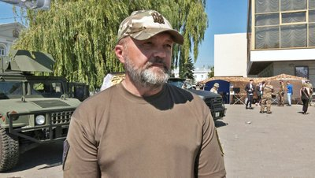
Олександр Корнієнко / Нестор Воля
Старший сержант · червень–вересень 2024 · Хмельницький
Луцьк · 28 черв. 2024 · © Суспільне
Контекст і роль
У 6-му Полку «Рейнджер» влітку–восени 2024 виконував функції керівника проєктів медійних комунікацій та (тимчасово) обов'язки начальника служби зв'язків з громадськістю. Медійний представник Полку.1
Основні функції
- Вибудова позитивного іміджу полку «Рейнджер» на основі якісної комунікації між зовнішніми та внутрішніми споживачами інформації. Брендинг.
- Створення контенту — фотографії, відео — основа для дописів та комунікацій підрозділу.
Результат: 25 фотоальбомів контенту.2

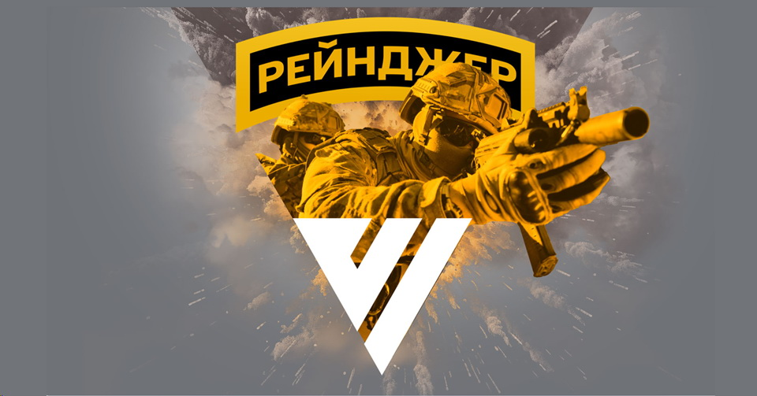
Рекрутингові кампанії «День без повісток»
За червень–серпень 2024 проведено 5 інформаційно-рекрутингових заходів:3
Хмельницький · Ковель · Луцьк · Тернопіль · Чернівці3
База контактів (телефон + e-mail) регіональних ЗМІ — ОДА, міські, ТВ, інтернет, преса — 140 записів.4 Організовував підтримку ЗМІ на заходах у Тернополі та Луцьку. Вибудовані стосунки з відомими активістами та культурними діячами; досягнуті домовленості про амбасадорство Рейнджерів на регіональному та загальноукраїнському рівнях.
Медіа про події
Ритуали та церемоніали
Постійний учасник і співорганізатор робочих груп зі святково-ритуальних заходів Рейнджерів (Присяга, Промова, БЗВП, Шеврон).
Спів-редактор «Промови Рейнджера», співавтор церемоніалу «Випуск БЗВП» та «Вручення шеврону Рейнджера».5
Взаємодія зі ЗМІ та публічні заходи
Здійснював взаємодію зі ЗМІ, інформаційними підрозділами ЗСУ та МО, місцевою владою, волонтерами. Надавав численні інтерв'ю під час інфоподій. Приймав участь у прямих ефірах. Ведучий концертних заходів Рейнджерів («Чумацький шлях»).
- Запис і узгодження інтерв'ю командира для Суспільного Хмельницький6
- Запис привітання командира Рейнджерів з Днем ССО — відео7
- Запис роліка Голови Хмельницької ОВА до Дня Незалежності — відео8
- Спікер і співорганізатор благодійного забігу «Воля вирішує все»9
- Співорганізатор проєкту «Плазма крові» — відповідальний за благодійні внески10
- Концертний захід «Чумацький шлях» (ведучий)11
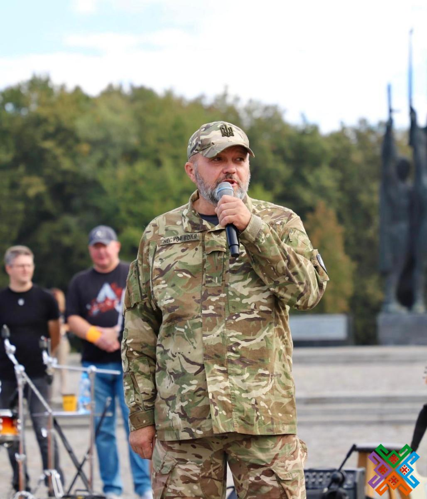
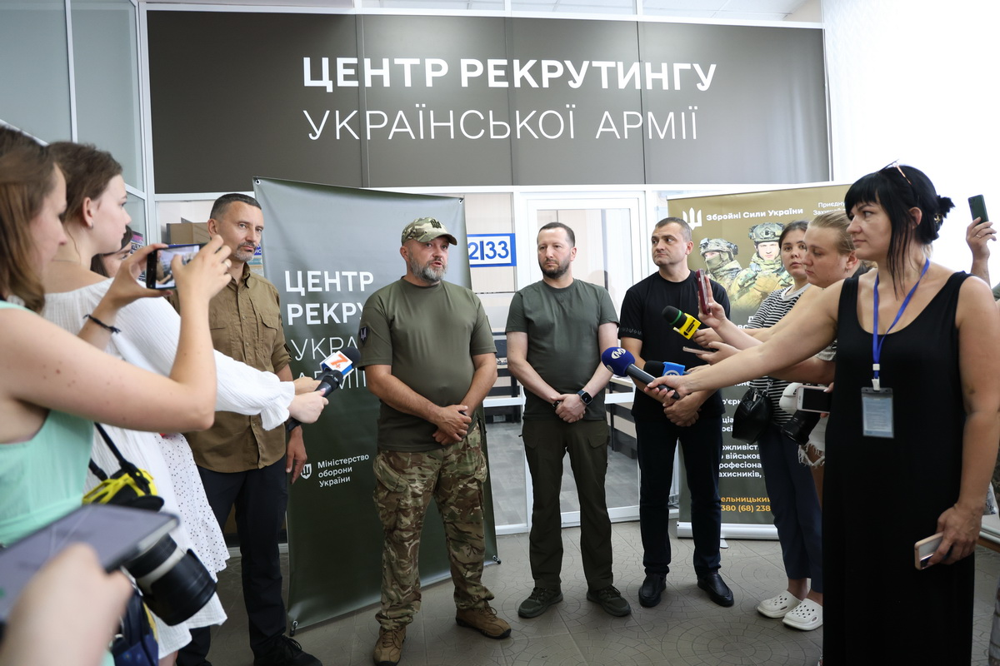
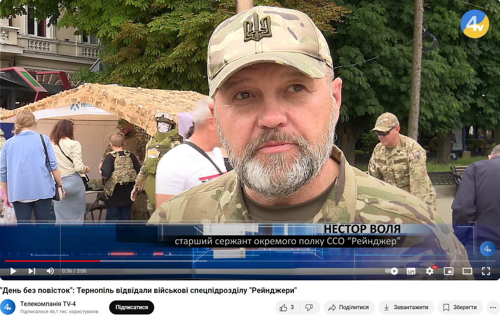
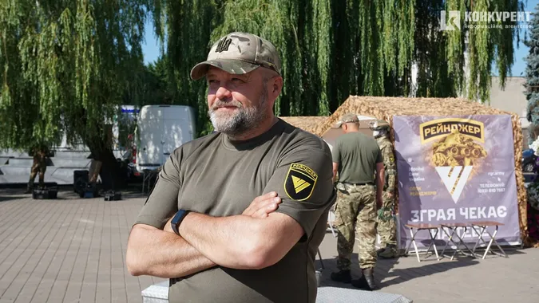
Зйомки та фотоконтент
Співорганізатор зйомок на полігонах полку для контенту дописів і відео. Автор ідей, фото та відеоматеріалів для більшості оригінальних дописів у соціальних мережах Рейнджерів у червні–вересні 2024. Фотографування здійснювалось поза функціональних обов'язків, в поміч штатному фотографу.
Понад 20 авторських фотоальбомів; матеріали передано на КСССО для книги-календаря ССО на 2025 рік.12 Засновано архів «літопису» полку.


Аналітика Facebook (липень–вересень 2024)

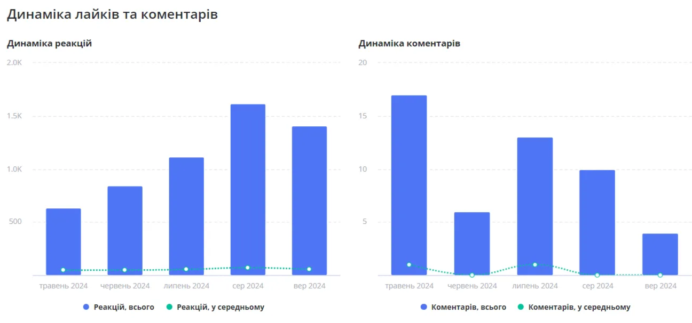
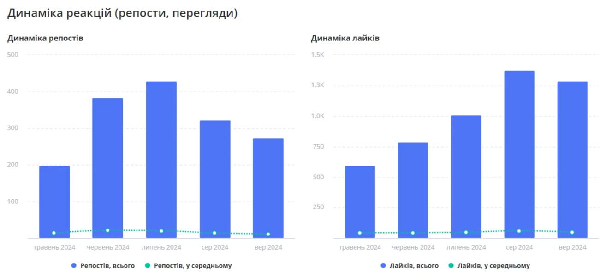


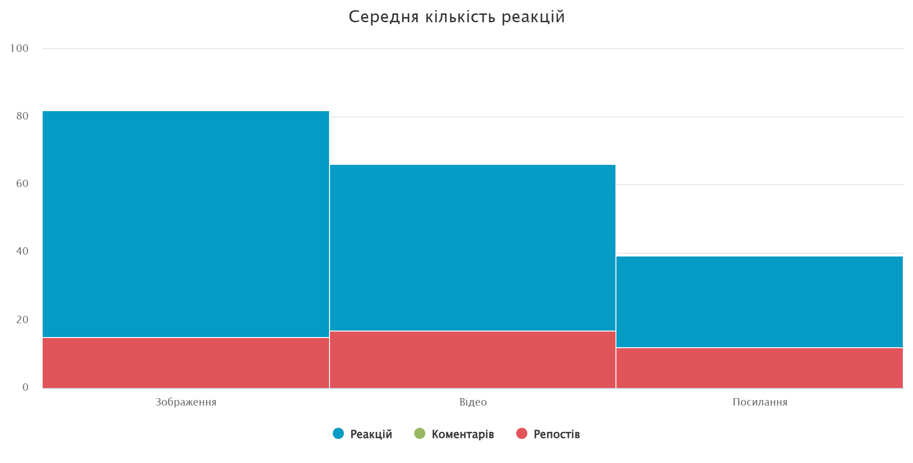
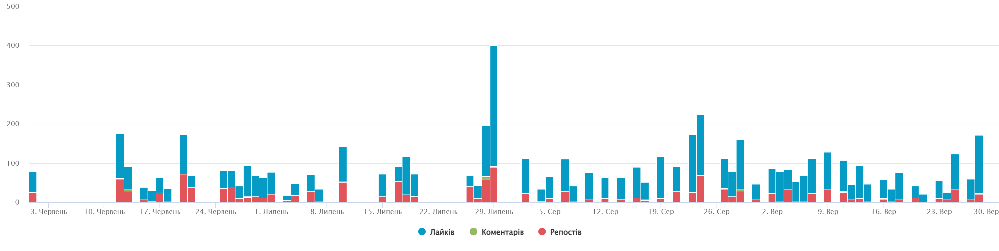
Аналіз дописів за кількістю, якістю та авторами контенту
Підготовку текстів та редагування фото/відео здійснювала штатна фотографка (місцева журналістка, мобілізована у червні 2024). Автор ідей та вихідних матеріалів — Нестор Воля.
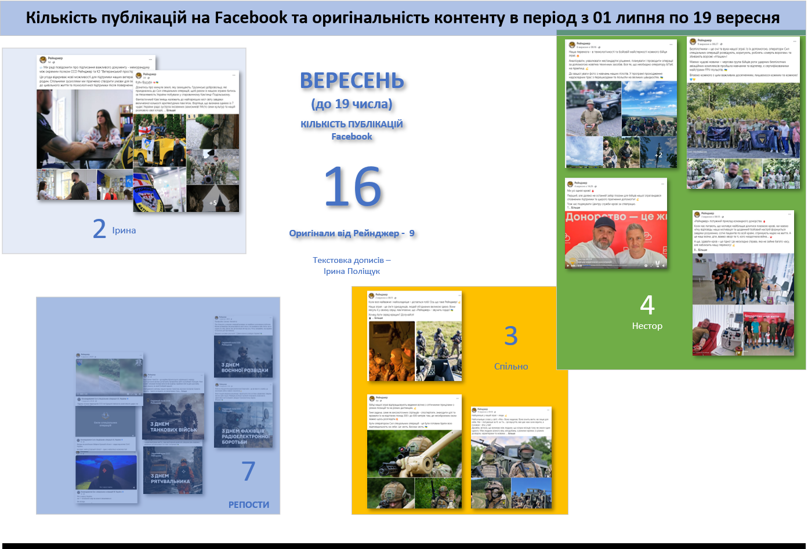
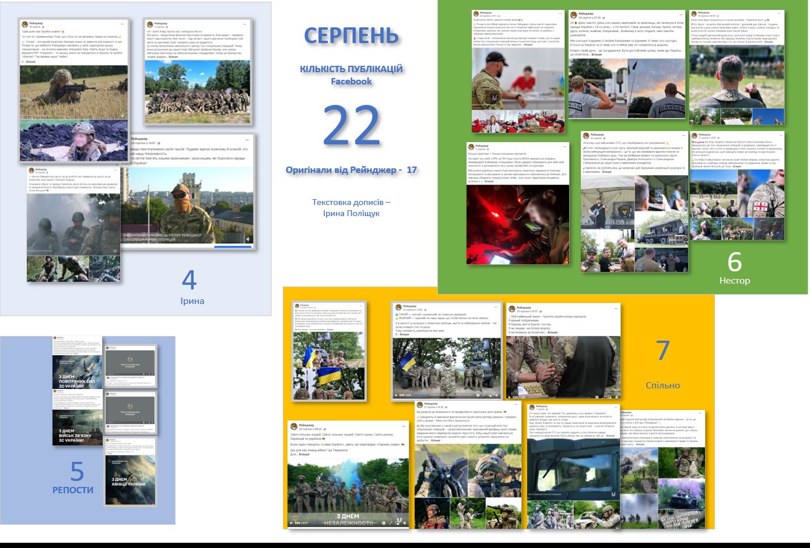
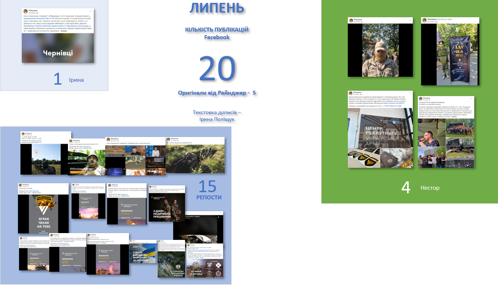

Висновок
Сучасна війна потребує сучасних методів організації та управління. Комунікаційні підходи з бізнесу — PR, брендинг, рекрутинг — ефективно застосовуються у військовій практиці й дають вимірний результат.
- Військові методи мобілізації та відбору особового складу доповнюються бізнес-методами підбору персоналу
- Систематизована присутність в інформаційному просторі формує позитивний образ підрозділу
- Комунікація — правдива, збалансована, спрямована на підтримку іміджу ССО та ЗСУ
- Додаткові ресурси (матеріальні та людські) залучаються через медійну присутність і партнерства
І «нові», і традиційні методи комунікацій мають на меті головне — покращення боєздатності та зниження втрат у боротьбі з агресором.
Вирішальним фактором високої боєздатності є задовільний морально-психологічний стан бійців.

Примітки
- Новий підрозділ Сил спеціальних операцій «Рейнджер» на Хмельниччині — що це? // Суспільне Хмельницький : [вебсайт]. — 2024. — URL: https://suspilne.media/khmelnytskiy/772603-novij-pidrozdil-sil-specialnih-operacij-rejndzer-na-hmelniccini-so-ce/ (дата звернення: 15.06.2026). ↩︎
- Полк ССО «Рейнджер» [Електронний ресурс] / Facebook (офіційна сторінка). — Режим доступу: https://www.facebook.com/rgr.army (станом на 15.06.2026). ↩︎
- Рекрутингові заходи «День без повісток» (червень–серпень 2024, 5 міст) підтверджено публікаціями: Суспільне Хмельницький : [вебсайт]. — 2024. — URL: https://suspilne.media/khmelnytskiy/772603-novij-pidrozdil-sil-specialnih-operacij-rejndzer-na-hmelniccini-so-ce/ (дата звернення: 15.06.2026); Суспільне Луцьк : [вебсайт]. — 2024. — URL: https://suspilne.media/lutsk/779021-den-bez-povistok-bijci-polku-rejndzer-proveli-v-lucku-akciu-z-rekrutingu-do-vijska/ (дата звернення: 15.06.2026); TV4 Тернопіль : [вебсайт]. — 2024. — URL: https://tv4.te.ua/den-bez-povistok-ternopil-vidvidaly-vijskovi-spetspidrozdilu-rejndzhery/ (дата звернення: 15.06.2026). ↩︎
- «Тут не роздають повістки»: у Хмельницькому відкрили рекрутинговий центр // vsim.ua : [вебсайт]. — 2024. — URL: https://vsim.ua/Podii/tut-ne-rozdayut-povistki-u-hmelnitskomu-vidkrili-rekrutingoviy-tsentr-11934446.html (дата звернення: 15.06.2026). Відомості про 140 записів медіабази — особистий архів автора. ↩︎
- Промова Рейнджера [Електронний ресурс] / Facebook (відео). — 2024. — Режим доступу: https://fb.watch/v049RtWCzY/; https://fb.watch/uNH4NfELSg/ (станом на 15.06.2026). ↩︎
- Новий підрозділ Сил спеціальних операцій «Рейнджер» на Хмельниччині — що це? // Суспільне Хмельницький : [вебсайт]. — 2024. — URL: https://suspilne.media/khmelnytskiy/772603-novij-pidrozdil-sil-specialnih-operacij-rejndzer-na-hmelniccini-so-ce/ (дата звернення: 15.06.2026). ↩︎
- Привітання командира полку ССО «Рейнджер» з Днем Сил спеціальних операцій [Електронний ресурс] / Facebook (відео). — 2024. — Режим доступу: https://www.facebook.com/share/v/5AJcrgSaDEqMhcex/ (станом на 15.06.2026). ↩︎
- Привітання Голови Хмельницької ОВА з Днем Незалежності [Електронний ресурс] / Facebook (відео). — 2024. — Режим доступу: https://www.facebook.com/share/v/DEYpx4CpcjMbmZiN/ (станом на 15.06.2026). ↩︎
- «Воля вирішує все» — відбувся благодійний забіг на підтримку спецпризначенців // km-oblrada.gov.ua : [вебсайт]. — 2024. — URL: https://km-oblrada.gov.ua/volya-vyrishuye-vse-vidbuvsya-blagodijnyj-zabig-na-pidtrymku-speczpryznachencziv/ (дата звернення: 15.06.2026). ↩︎
- Полк ССО «Рейнджер» — проєкт «Плазма крові» [Електронний ресурс] / Facebook (публікація офіційної сторінки). — 2024. — Режим доступу: https://www.facebook.com/rgr.army/posts/pfbid02cxutEfV9CjLsMBUW3wB2vLcWNzBheuyvtkto3ZeuJhdQu7uma46JHcHH8A46AAsl (станом на 15.06.2026). ↩︎
- Полк ССО «Рейнджер» — концертний захід «Чумацький шлях» [Електронний ресурс] / Facebook (публікація офіційної сторінки). — 2024. — Режим доступу: https://www.facebook.com/rgr.army/posts/pfbid0WpnANzCFDmxLUpQojucgnJjYzFffV32kdh7mUyHe1XozLVSWXBeRVrj8j4s5LYK4l (станом на 15.06.2026). ↩︎
- Полк ССО «Рейнджер» : фотоархів 2024 [Електронний ресурс] / Facebook (офіційна сторінка). — Режим доступу: https://www.facebook.com/rgr.army (станом на 15.06.2026). Факт передачі матеріалів до КСССО для книги-календаря ССО на 2025 р. — особистий архів автора. ↩︎
- Полк ССО «Рейнджер» : офіційна сторінка [Електронний ресурс] / Facebook. — Режим доступу: https://www.facebook.com/rgr.army (станом на 15.06.2026). Дані про кількість підписників (~1 000 на травень–червень 2024) отримано методом зовнішнього аналізу без доступу до адмін-панелі. ↩︎